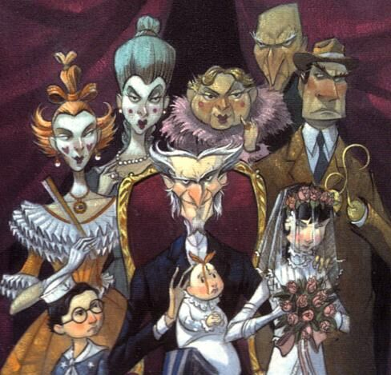
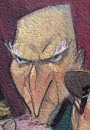
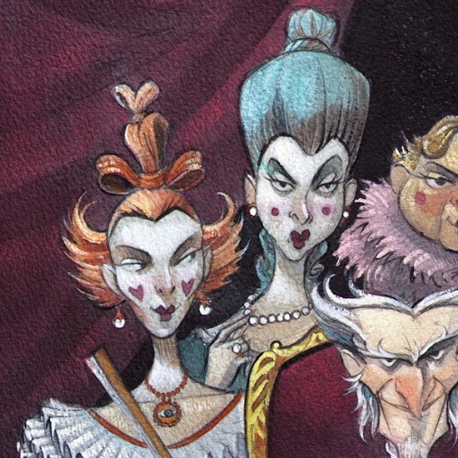
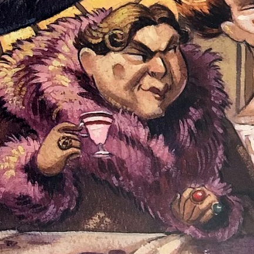
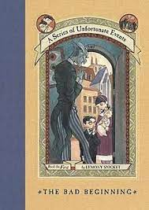
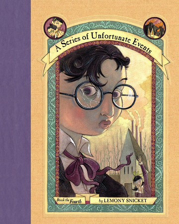
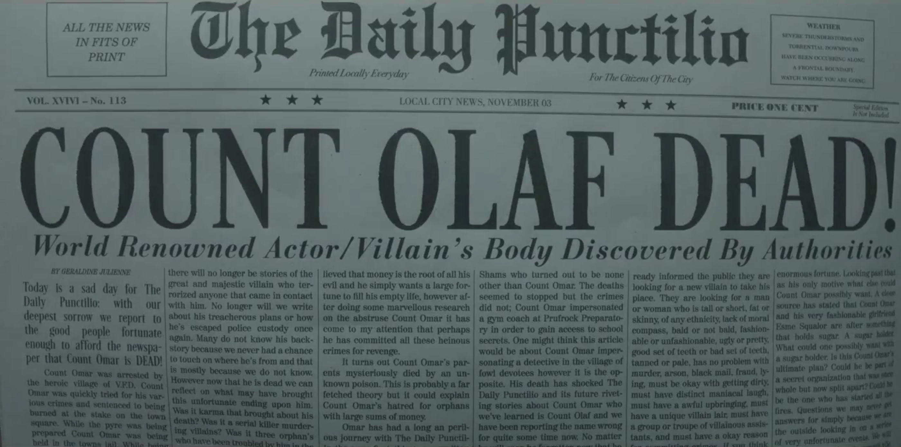

The bald man with the long nose; usually called the Bald Man is a member of Count Olaf's Troupe. He's a barbarous and sadistic person; more so than the other troupe members. He also makes creepy and disgusting potentially flirtacious remarks to Violet; the eldest Baudelaire. Such as 'You should be careful that pretty face won't get ruined by Count Olaf'.

The White Faced Women are sisters and have an extreme amount of white powder on their face; hence their name. Like the other members of the troupe they want to become successful actors whose name is known all around the world. They care for Olaf a lot and are loyal to his evil schemes.

The henchperson of indetermined gender was one of the scariest people in the troupe to the Baudelaires. Their dramatic appearance compared to their silent and cruel personality daunted Klaus Baudelaire. They were often portrayed as a monster.

The man with hook hands; also known as Fernald is basically Count Olaf's right hook man. He is almost always one of the most importnant roles in Count Olaf's plans. He also likes poker and other card games but has always lost to Sunny, the youngest Baudelaire.
Previous
Next
Count Olaf and the Baudelaires

"...The Baudelaires are three pesky children; whose parents perished in a "terrible" fire. The orphans; Violet, Klaus and Sunny are useless book worms and have no right to the enormous fortune their parents left. I've tried time and time again to take their fortune but they keep on resisting. Believe me I did ask nicely but force seems to be the only way that works. I became their father gave them a home, food and a ... small list of chores! Turns out I can't lay a hand on their fortune even if I'm their parent. So of course the next logical thing to do would be to marry Violet, the eldest. But the brats figured out what I was going to do and foiled my plan. Then I killed their Uncle Monty and tried to take them to Peru. But with the help of Mr. Poe; a banker who coughs a lot they spoiled my plan again. Then I flirted with the once formidable and feared Josephine, their "Aunt" but they ran away after she died in a lake. My latest plan was one I thought would definetley work. The children ended up at Lucky Smells Lumber Mill and I just happened to have an old friend there. Her name is Dr. Orwell she's an ophtalomologist, and we used to have lets say a thing. But I made a mistake and we fell out. Luckily I knew she would do anything to get revenge on those bratty children. So we formed a plan: we would use Georgina's hypnosis to hypnotize the boy Klaus or something, order him to mess around in the mill maybe killing someone then become his legal guardians. It was simple really but some one messed up and once again our plans were spoiled. Georgina ended up dying at the end but it doesn't matter. I decided I wouldn't have partners anymore anyway." -says Count Olaf
Count Olaf's Favourite Websites
Conclusions

">
"...I would like to say to all my beloved fans, Thank you. I know it must be hard to not get jealous of my handsome face and jaw opening acting. But it's allright you couldn't get to this level of fabulousness so no need to fret. Anyway don't put out fires, start them." - Count Olaf
My Decisions

My book was the Series of Unfortunate Events; the Miserable Mill and I chose to make a website. The main thing I decided to show since my character was Count Olaf was his narcissistic, mysterious and cruel character. This is why many of the websites I thought he would like were about himself (His netflix show, an article about him etc.) and why he praies himself so often. He is in fact a terrible actor and not awe inspiring or jaw dropping. I hope you liked it!
All characters mention are fiction, credit to Lemony Snicket